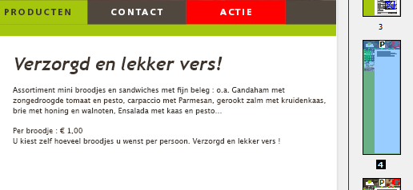
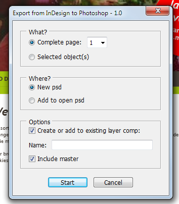
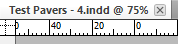
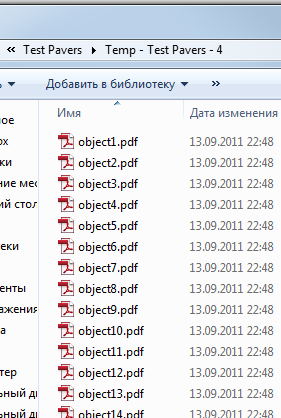

Export from InDesign to Photoshop
Script for InDesign CS5-5.5
Prerequisites:
- A pdf-preset called "ExportToPS_bleedmarks" should be installed
- Only not empty text frames with applied object style "-text" located on a layer which name ends with "-text" are exported as editable text
1. Activate the page you want to export.

The script works on page by page basis: only the active page will be exported to psd-file.
2. Run the script.
A dialog box will appear. However, it only OK and Cancel buttons work so far.

The script removes all pages except the active and saves the active document with a new file name: the original base name plus hyphen and the active page number.

Then a temporary folder is created -- that's where temporary pdf-files are saved (I can delete them at the end of the script, of course if you want).

Every object is moved to a separate layer which is exported to a separate pdf-file and rasterized to a separate layer in the psd-file.
Click here to download the script.